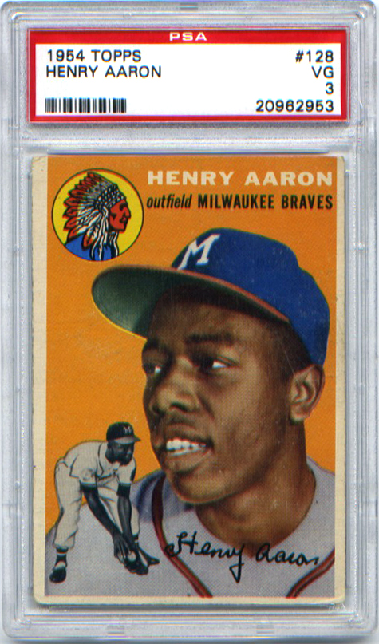

January 22, 2021
Legendary Players/Iconic Cards
Hank Aaron Rookie Card • 1954 Topps #128
BY KEITH WANDREI
"The pitcher has got only a ball. I've got a bat. So the percentage in weapons is in my favor and I let the fellow with the ball do the fretting." – Hank Aaron
Henry Louis Aaron was born on Feb. 5, 1934 in Mobile, Alabama. That year also marked the final season of Babe Ruth in the pinstripe uniform of the New York Yankees. Ruth went on to play one more season – for the Boston Braves – adding 6 home runs for a career total of 714 homers.
That mark stood as the Major League Baseball record until Henry Louis Aaron – now universally known as “Hammerin' Hank” – hit the 715th homer of his career on April 8, 1974. A then Atlanta Braves record crowd of 53,775 fans watched Aaron drive a pitch from Al Downing of the Los Angeles Dodgers into the Braves' left-centerfield bullpen in the fourth inning.
Dodgers broadcaster Vin Scully summed up the historic moment with his call of the home run: “What a marvelous moment for baseball; what a marvelous moment for Atlanta and the state of Georgia; what a marvelous moment for the country and the world. A black man is getting a standing ovation in the Deep South for breaking a record of an all-time baseball idol. And it is a great moment for all of us, and particularly for Henry Aaron.”
Aaron played two more seasons, finishing his career in 1976 at age 42 with 755 home runs. Aaron's home run record stood for more than 30 years, until 2007, when it was broken by Barry Bonds of the San Francisco Giants.
When he retired, Aaron was the last MLB player to have played in the professional Negro leagues, having played with the Indianapolis Clowns of the Negro American League at age 17.
LEGENDARY PLAYER
Standing 6-feet tall and weighing 180 lbs., Aaron was not an overwhelming physical presence nor a loud personality. He let his strong hands and wrists and bat do the talking during his 23-year career, which was marked by consistent performance.
He hit 24 or more home runs every year from 1955 through 1973, and is one of only two players to hit 30 or more homers at least 15 times. His greatest overall season was in 1957, when he led MLB in home runs (44), RBI (132) and runs (118), and batted .322. Aaron won the only World Series of his career that season as the Milwaukee Braves beat the Yankees in seven games. Aaron did his part on the grandest stage, hitting .393 with 3 homers and 7 RBI.
Aaron summed up his approach to hitting simply, “My motto was always to keep swinging. Whether I was in a slump or feeling badly or having trouble off the field, the only thing to do was keep swinging.
“I looked for the same pitch my whole career, a breaking ball. All of the time. I never worried about the fastball. They couldn't throw it past me, none of them. The thing I like about baseball is that it's one-on-one. You stand up there alone, and if you make a mistake, it's your mistake. If you hit a home run, it's your home run.”
While Aaron ranks No. 2 on the career home run list behind Bonds (762), he is the all-time MLB leader in RBI (2,297) and total bases (6,856). With 3,771 career hits, he also ranks third on the all-time hit list behind Pete Rose (4,256) and Ty Cobb (4,191).
“The most important thing in my career out of the 23 years I played is I never struck out 100 times. Getting the base hits was the greatest thrill of my life,” Aaron told The Enquirer in 2015.
Apart from his career, Aaron is known for his distinguished character and Civil Rights activism. Inducted into the Baseball Hall of Fame in 1982, he received the Presidential Medal of Freedom (the nation's highest civilian honor) in 2002.
“Once the (home run) record was mine, I had to use it like a Louisville Slugger,” Aaron wrote in I Had a Hammer: The Hank Aaron Story. “I believe, and still do, that there was a reason why I was chosen to break the record. I feel it's my task to carry on where Jackie Robinson left off, and I only know of one way to go about it. It's the only way I've ever had of dealing with things like fastballs and bigotry – keep swinging at them.”
Until his death at age 86 on January 22, 2021, Aaron served as senior vice president of the Atlanta Braves.

ICONIC CARD: 1954 Topps #128
The horizontal card has a vibrant orange background, a large color head shot of Aaron, a black-and-white image of Aaron fielding a ball, the Braves logo, the name HENRY AARON with outfield MILWAUKEE BRAVES beneath it, and the facsimile auto Henry Aaron.
Remarkably, the same head shot also appears on Aaron's cards in the 1955 Topps (card #47) and 1956 Topps (#31) sets. It should also be noted that the image of Aaron sliding into home plate on the 1956 card is actually Willie Mays!
Key cards in the 250-card 1954 Topps set include Ted Williams (card #1, HOF), Jackie Robinson (#10, HOF), Willie Mays (#90, HOF), Ernie Banks (#94, HOF, Rookie Card), Al Kaline (#201, HOF, Rookie Card) and Ted Williams (#250, HOF). Another key Rookie Card is Tom Larsorda (#132, HOF).
Among the notable absences from the set is Mickey Mantle, whose 1954 card was released in the Bowman set. Prior to the 1956 season, Topps purchased Bowman to end the battle between the two card makers for top talent.
Each card in the 1954 set measures 2-5/8" x 3-3/4" and is made of medium stock cardboard. The cards were sold in 1-card penny packs, 4-card nickel packs and 15-card cello packs.
For $2 in 1954, you could have put 5 gallons of gas in your car (22 cents per gallon), gone to a movie (70 cents per ticket) and had enough left over to buy four 4-card nickel packs!
PRICES
According to PSA population reports, there are two GEM MT 10 Hank Aaron rookie cards, and there are 25 MINT 9 examples.
In 2016, two PSA Mint 9 Aaron rookie cards sold for $358,000 and $312,000.
How has the price for a high-end Aaron rookie changed over the last 12-13 years? In 2007 and 2008, three PSA 9 cards were sold for $25,517, $17,292 and $16,730.
To get a snapshot of current prices, check out the eBay Buy It Now and Auction sales range from June 22 through September 3, 2020 (does not include Best Offer Accepted sales):
PSA 1 – $1,050 to $1,599
PSA 2 – $1,400 to $2,868
PSA 3 – $1,950 to $2,500
PSA 4 – $2,410 to $3,200
PSA 5 – $3,450 to $4,800
PSA 6 – $5,600 to $6,700
PSA 7 – $7,854 to $9,450
As for mid-grade examples, a PSA 5 could have been purchased in 2012 for $700 to $900. Now it is in the $3,500 to $4,500 ballpark.
In 2012, this writer and his son purchased an Aaron rookie card, a PSA 3, for $400. It is now in the $1,400 to $2,000 price range. It's the centerpiece of our Aaron collection as my son and I try to collect all of Aaron's base cards from his playing career. To us, it's priceless!
Keith Wandrei is a freelance writer who has written for the Eau Claire Leader-Telegram, Full-Court Press and Los Angeles Times. His son Dustin is a lifetime member of the Twin Cities Sports Collectors Club.
August 10, 2012
Top 10 Players to Collect Down the Stretch
Here are my Top 10 baseball players to collect the rest of this season. With less than 2 months to go in the regular season, they are all having great seasons AND are on great teams. Whoever gets to the World Series (and wins it) from this group will get a nice bump in card prices:
- Mike Trout: The rookie has been the best player in MLB since he was called up. If he can win MVP and rookie of the year – and claim the AL batting title – then his cards will get another nice bump (like his prices after the All-Star game). Now’s the time to buy if you think he can claim all three individual records AND the Angels make it to the World Series. If you can get an auto card for under $100, GRAB IT! I just picked up a 2012 Bowman Platinum Gold Refractor/50 with auto and relic for $207, and I consider it a bargain. The same card on eBay bought before and after my purchase went for $250+.
- Yu Darvish: What can I say: he’s the hottest Japanese player since Ichiro to put on a pro jersey. He has put up monster numbers his first year here in America and we can only expect more from him in the future. His record was 11-8 in early August, and he’s not as effective as he was earlier in the season. But he has 6 great pitches and could shine in the postseason with lots of national attention.
- Albert Pujols: He is the best player of the past 20 years and with this down year (for him) the prices of his cards have lowered slightly on eBay. This makes him the perfect player to collect. With all the hot young players, collectors have been overlooking him. His career numbers will justify his card prices.
- Bryce Harper: At age 19 he is the fourth youngest player to ever put on an MLB jersey. There is much praise for this young star that has the highest priced rookie cards in history (while he was still playing). If he can stay healthy over the long haul, he has all the tools to be a legend.
- Matt Kemp: KeMVP had dominating numbers up until his injury earlier in the season. Nonetheless, he is still hot for collectors. The prices of his cards have gone from out -of-this world to high, making him finally available to collectors who missed the surge. If the Dodgers get to the World Series and he stays healthy, look for him to become an even bigger name.
- Josh Hamilton: He has put up career numbers so far this season with 30 home runs and a .300+ batting average, and who can forget that 4-home run game back in June. He is a collector’s favorite even with low career numbers due to a late start. Can he win a World Series after two straight losses in the Series?
- Yoenis Cespedes: Coming from Cuba, this rookie star has helped turn the A’s from a laughing stock into a serious playoff contender, even though the A’s have the lowest team salary in the majors at 54 million a year (Joe Mauer of my hometown Twins is paid 20 million a year!).
- Mark Trumbo: With all the hype surrounding Angels rookie leftfielder Mike Trout, people tend to forget their other rookie star, Mark Trumbo. His cards are low priced and worth it. Look for prices to surge as he continues to hit for power.
- Andrew McCutchen: Andrew has always been a threat at the plate and on the base path but not like this before. He is #1 in the standings for NL MVP and his cards are still a good price. Can the Pirates advance beyond one round of the playoffs? If so, he will be a household name and not just in the Keystone State.
- R.A. Dickey: He has had one of the best seasons for a pitcher I personally have ever seen (I’m 13 years old, after all), but there are 2 problems with him. One he is 36 years old and, second, this is the only good season of his entire career (with many more to come now that he has re-invented himself and throws his knuckle ball hard). Throwing knuckleballs, he could pitch until he’s 50, so keep an eye on him for many more years of success. Pick up a rookie card of the likely NL Cy Young winner.
March 24, 2012
TCSCC Fantasy Baseball Team
Welcome to my first blog entry! Here is my 2012 TCSCC fantasy baseball team (*denotes premium player; 2 allowed per team). Winner each month gets club bucks and overall winner gets $50 club bucks!
1B Albert Pujols* – Have a $250 Pujols auto relic card!
2B Dustin Pedroia
3B David Wright
SS Jose Reyes – Want to get his 2012 Topps short print card!
C Joe Mauer – I think he'll bounce back this season; needs to stay healthy
OF Jason Heyward – Have a nice Allen & Ginter 2011 mini card ($50)
OF Curtis Granderson
OF Josh Willingham – Wanted another Twins player; got his autograph on a ball at 2012 TwinsFest
Designated Player Jose Bautista*
SP Michael Pineda – Trying to get a lot of his cards; should go big-time with Yankees!
SP James Shields
RP Jonathan Papelbon
RP Craig Kimbrel
Any Pitcher Cole Hamels
Any Pitcher Dan Haren
The original blog posts have been preserved in this archive.